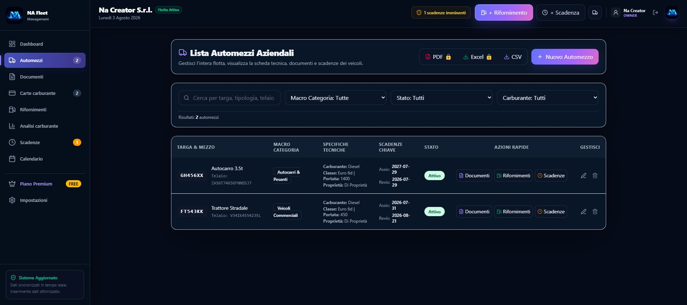
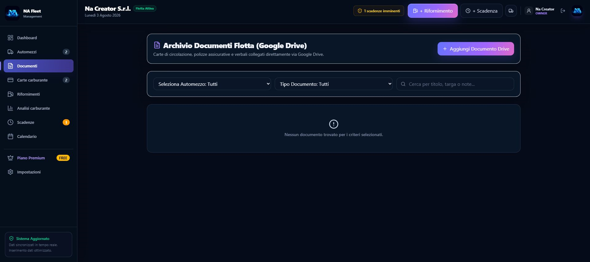
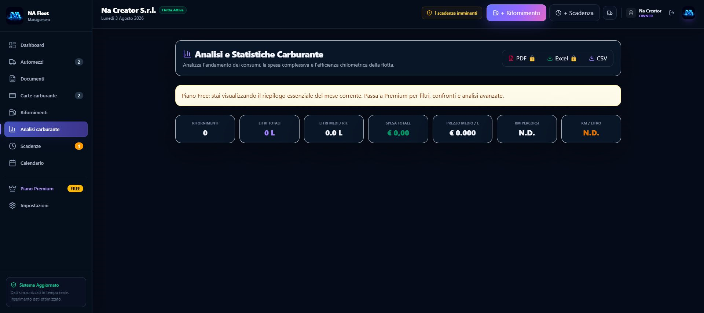
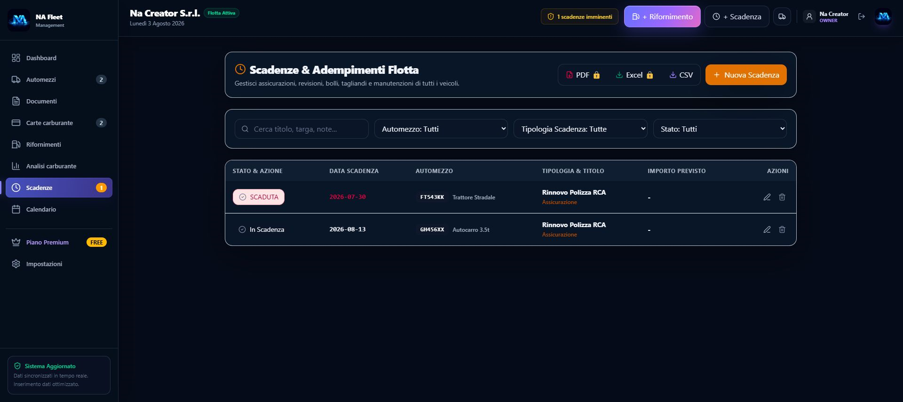
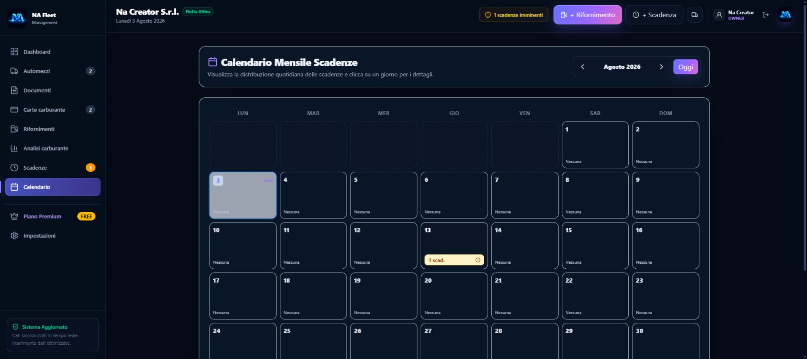
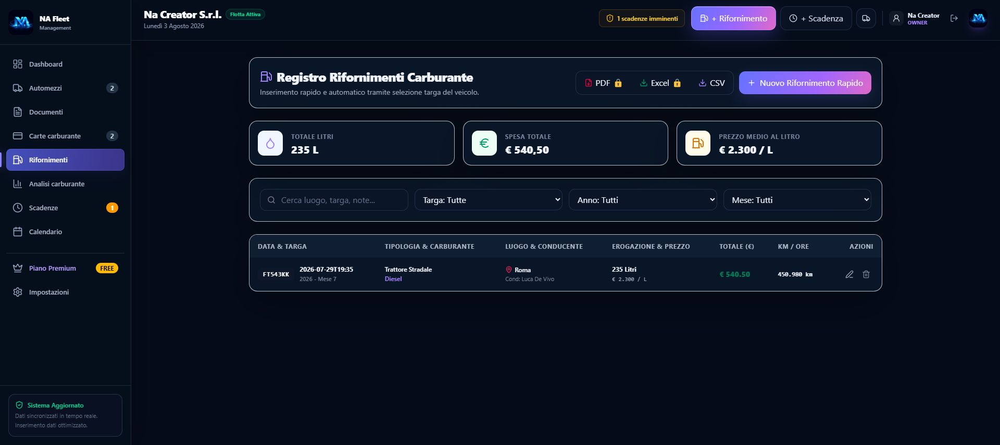
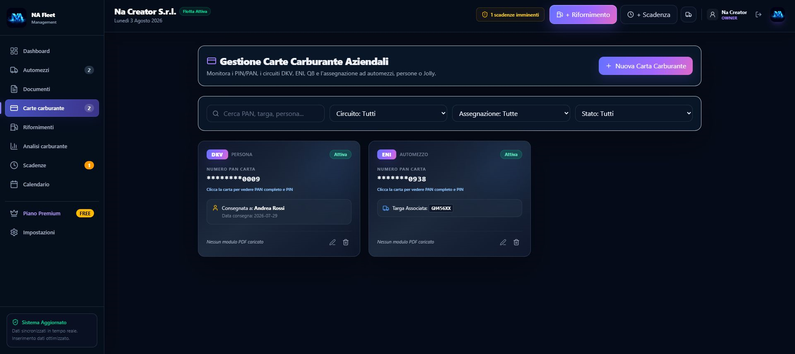

Una revisione annotata sul calendario, una polizza in una cartella condivisa, i rifornimenti in un foglio di calcolo e le manutenzioni affidate a promemoria personali. Molte aziende gestiscono così la propria flotta: con strumenti differenti e spesso scollegati.
Il problema non è la mancanza di informazioni, ma riuscire a trovarle, verificarle e metterle in relazione quando servono. Basta una scadenza dimenticata, un documento difficile da recuperare o un'anomalia nei consumi non individuata per trasformare una normale attività amministrativa in un costo o un'interruzione operativa.
Da questa esigenza nasce NA Fleet Management, l'applicazione Windows sviluppata da NA Creator per rendere la gestione della flotta più semplice, ordinata e consapevole.
Gestire una flotta significa coordinare informazioni
Sapere quanti veicoli possiede un'azienda è soltanto il punto di partenza. Ogni automezzo porta con sé assicurazioni, revisioni, bolli, tagliandi, manutenzioni e documenti. A questi si aggiungono percorrenze, litri acquistati, costi, consumi e carte carburante.
Quando i dati sono distribuiti tra fogli Excel, documenti cartacei e cartelle digitali, anche una domanda semplice può richiedere tempo. NA Fleet Management riduce questa frammentazione e offre una base informativa chiara da consultare.


Un unico ambiente per il lavoro quotidiano
La dashboard offre una visione immediata dello stato della flotta, mentre le diverse sezioni permettono di approfondire ogni attività. Per ciascun veicolo è possibile gestire documenti, scadenze, manutenzioni e informazioni operative.
Assicurazioni, revisioni, bolli e tagliandi vengono raccolti in un ambiente centralizzato. È inoltre possibile collegare i documenti archiviati su Google Drive, mantenendo un riferimento organizzato ai file già presenti nello spazio cloud dell'azienda.
Dati che aiutano a prendere decisioni
Un gestionale non dovrebbe limitarsi a conservare informazioni. Il suo valore emerge quando i dati aiutano a comprendere ciò che sta accadendo.
Registrando rifornimenti, percorrenze, quantità di carburante e costi, l'azienda costruisce nel tempo una visione più chiara dell'utilizzo dei singoli mezzi e dell'andamento della spesa. I dati possono essere confrontati ed esportati per ulteriori elaborazioni.


Scadenze visibili, attività più organizzate
Una revisione dimenticata può rendere un veicolo temporaneamente inutilizzabile. Un'assicurazione prossima alla scadenza richiede attenzione e una manutenzione non programmata può interrompere l'operatività.
NA Fleet Management centralizza eventi e scadenze e li rende consultabili anche attraverso un calendario operativo. Il sistema non sostituisce il controllo umano, ma offre una base ordinata per programmare le attività e intervenire in anticipo.
Un calendario operativo sempre consultabile
Le principali attività future possono essere visualizzate in un calendario mensile, così assicurazioni, revisioni, bolli, tagliandi e manutenzioni non rimangono dispersi tra note e promemoria personali.
In una flotta composta da più veicoli, questa visione può fare la differenza tra anticipare una necessità e affrontarla quando è già diventata urgente.


Gestione carburante: capire dove vengono impiegate le risorse
Per comprendere davvero l'andamento della spesa è necessario mettere in relazione veicolo, data, quantità acquistata, percorrenza e importo. Ogni rifornimento contribuisce così a costruire lo storico del mezzo.
L'obiettivo non è soltanto sapere quanto è stato speso, ma osservare come la spesa cambia nel tempo e individuare variazioni che meritano attenzione.
Carte carburante sotto maggiore controllo
Le carte carburante possono essere organizzate per circuito, stato e tipologia di assegnazione. Una carta può essere collegata a un veicolo, a una persona oppure configurata per un utilizzo jolly.
PAN e PIN sono riservati agli utenti autorizzati. Quando il PIN viene inserito, viene cifrato prima della memorizzazione, per rendere disponibili le informazioni sensibili solo quando necessario.

Una versione gratuita per iniziare
Il piano Free consente alle realtà più piccole di iniziare a organizzare la propria flotta senza adottare immediatamente un abbonamento.
Fino a 5 automezzi
Registra e organizza i mezzi principali della flotta.
Carte e documenti
Gestisci fino a 2 carte carburante e 2 documenti per mezzo.
Operatività quotidiana
Registra rifornimenti, percorrenze, scadenze e calendario.
Esportazione CSV
Esporta i dati per successive elaborazioni amministrative.
Meno frammentazione, maggiore consapevolezza
Digitalizzare un processo non significa semplicemente trasferire informazioni dalla carta a uno schermo. Significa ripensare il modo in cui i dati vengono organizzati, consultati e utilizzati.
NA Fleet Management è pensato per responsabili di flotte, aziende di trasporto, officine, noleggiatori, amministratori e professionisti che desiderano sostituire procedure frammentate con un sistema moderno e facilmente consultabile.
Una flotta ben gestita non è soltanto un insieme di veicoli funzionanti: è un'organizzazione capace di conoscere i propri mezzi, anticipare le necessità e prendere decisioni più consapevoli.
Tutta la flotta, finalmente in un unico ambiente
NA Fleet Management porta veicoli, documenti, scadenze, carburante e informazioni operative all'interno di un'unica applicazione Windows. Perché avere tutto sotto controllo non significa controllare di più, ma lavorare con maggiore chiarezza.
Scopri le nostre applicazioni